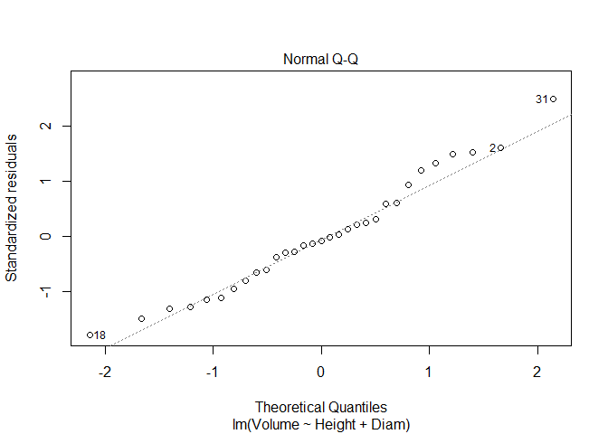
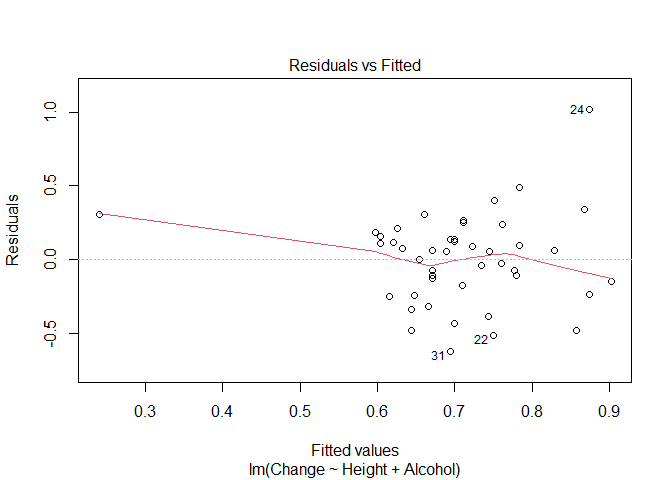
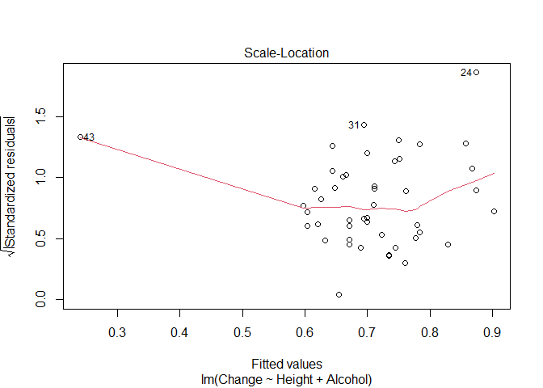

require(tidyverse)## Loading required package: tidyverse## ── Attaching packages ───── tidyverse 1.3.2 ──
## ✔ ggplot2 3.4.0 ✔ purrr 0.3.5
## ✔ tibble 3.1.8 ✔ dplyr 1.0.10
## ✔ tidyr 1.2.1 ✔ stringr 1.5.0
## ✔ readr 2.1.3 ✔ forcats 0.5.2## Warning: package 'ggplot2' was built under R version 4.2.2## ── Conflicts ──────── tidyverse_conflicts() ──
## ✖ dplyr::filter() masks stats::filter()
## ✖ dplyr::lag() masks stats::lag()require(car)## Loading required package: car## Warning: package 'car' was built under R version 4.2.2## Loading required package: carData
##
## Attaching package: 'car'
##
## The following object is masked from 'package:dplyr':
##
## recode
##
## The following object is masked from 'package:purrr':
##
## somerequire(MASS)## Loading required package: MASS
##
## Attaching package: 'MASS'
##
## The following object is masked from 'package:dplyr':
##
## selectrequire(MuMIn)## Loading required package: MuMIn## Warning: package 'MuMIn' was built under R version 4.2.2Before doing this, review the ** Combining Multiple Explanatory Variables in Linear Models** lecture set slides from https://sites.google.com/view/biostats/lessons/ancova-and-multiple-regression and the 10_ANCOVA_and_Regression.R script in the lecture files folder of the CUNY-BioStats github repository. Make sure you are comfortable with null and alternative hypotheses and appropriate plots for all examples.
Remember you should
Following the iris example from class
set.seed(13)
iris_example_species <-data.frame(
Species = c(rep("x",25), rep("y", 25), rep("z", 25)),
Sepal_Length = runif(75,2,4 ),
#no difference based on species or sepal length
Petal_no_impacts = runif (75, 4, 6))
#no difference based on species
iris_example_species$Petal_no_impact_species <-
iris_example_species$Sepal_Length * 2 + rnorm(75)
#no impact of petal length
iris_example_species$Petal_no_relationship <-rnorm(75) +
c(rep(2,25), rep(3,25), rep(4,25))
#impact of species and petal length but no interaction
iris_example_species$Petal_no_interaction <-
iris_example_species$Sepal_Length * 2 + rnorm(75) +
c(rep(2,25), rep(3,25), rep(4,25))
#impact of species and petal length with interaction
iris_example_species$Petal_interaction <-
iris_example_species$Sepal_Length * c(rep(-2, 25),rep(2,25), rep(5,25)) +
c(rep(2,25), rep(3,25), rep(4,25)) + rnorm(75)Plot the data
library(ggplot2)
ggplot(iris_example_species, aes(x = Sepal_Length, y = Petal_interaction, color = Species)) +
geom_point(size = 3)+
xlab("Sepal Length") +
ylab("Petal Length") +
ggtitle("Impact of Sepal Length and Species on Petal Length") +
theme(axis.title.x = element_text(face="bold", size=28),
axis.title.y = element_text(face="bold", size=28),
axis.text.y = element_text(size=20),
axis.text.x = element_text(size=20),
legend.text =element_text(size=20),
legend.title = element_text(size=20, face="bold"),
plot.title = element_text(hjust = 0.5, face="bold", size=32))Note the impact of sepal length appears to depend on species.
library(car)
Anova(lm(Petal_interaction ~ Sepal_Length * Species, iris_example_species),
type = "III")## Anova Table (Type III tests)
##
## Response: Petal_interaction
## Sum Sq Df F value Pr(>F)
## (Intercept) 2.096 1 1.6503 0.2032
## Sepal_Length 28.875 1 22.7307 1.001e-05 ***
## Species 2.920 2 1.1494 0.3228
## Sepal_Length:Species 159.284 2 62.6954 3.027e-16 ***
## Residuals 87.651 69
## ---
## Signif. codes: 0 '***' 0.001 '**' 0.01 '*' 0.05 '.' 0.1 ' ' 1Interaction is significant, so follow up for each species. this ends in regression!
summary(lm(Petal_interaction ~ Sepal_Length,
iris_example_species[iris_example_species$Species == "x",]))##
## Call:
## lm(formula = Petal_interaction ~ Sepal_Length, data = iris_example_species[iris_example_species$Species ==
## "x", ])
##
## Residuals:
## Min 1Q Median 3Q Max
## -2.1788 -0.9693 0.2359 0.5302 1.6908
##
## Coefficients:
## Estimate Std. Error t value Pr(>|t|)
## (Intercept) 1.5724 1.1058 1.422 0.168
## Sepal_Length -1.8824 0.3567 -5.277 2.35e-05 ***
## ---
## Signif. codes: 0 '***' 0.001 '**' 0.01 '*' 0.05 '.' 0.1 ' ' 1
##
## Residual standard error: 1.018 on 23 degrees of freedom
## Multiple R-squared: 0.5477, Adjusted R-squared: 0.528
## F-statistic: 27.85 on 1 and 23 DF, p-value: 2.35e-05Significant negative relationship for species x.
summary(lm(Petal_interaction ~ Sepal_Length,
iris_example_species[iris_example_species$Species == "y",]))##
## Call:
## lm(formula = Petal_interaction ~ Sepal_Length, data = iris_example_species[iris_example_species$Species ==
## "y", ])
##
## Residuals:
## Min 1Q Median 3Q Max
## -2.4904 -0.7587 0.2401 0.8115 1.3829
##
## Coefficients:
## Estimate Std. Error t value Pr(>|t|)
## (Intercept) 3.7147 1.2584 2.952 0.00715 **
## Sepal_Length 1.8307 0.4127 4.436 0.00019 ***
## ---
## Signif. codes: 0 '***' 0.001 '**' 0.01 '*' 0.05 '.' 0.1 ' ' 1
##
## Residual standard error: 1.142 on 23 degrees of freedom
## Multiple R-squared: 0.4611, Adjusted R-squared: 0.4376
## F-statistic: 19.68 on 1 and 23 DF, p-value: 0.00019Positive relationship for species y
summary(lm(Petal_interaction ~ Sepal_Length,
iris_example_species[iris_example_species$Species == "z",]))##
## Call:
## lm(formula = Petal_interaction ~ Sepal_Length, data = iris_example_species[iris_example_species$Species ==
## "z", ])
##
## Residuals:
## Min 1Q Median 3Q Max
## -2.4143 -0.5861 -0.1689 0.7747 3.1415
##
## Coefficients:
## Estimate Std. Error t value Pr(>|t|)
## (Intercept) 4.0916 1.5034 2.722 0.0122 *
## Sepal_Length 5.1553 0.5402 9.543 1.83e-09 ***
## ---
## Signif. codes: 0 '***' 0.001 '**' 0.01 '*' 0.05 '.' 0.1 ' ' 1
##
## Residual standard error: 1.213 on 23 degrees of freedom
## Multiple R-squared: 0.7984, Adjusted R-squared: 0.7896
## F-statistic: 91.07 on 1 and 23 DF, p-value: 1.834e-09and z!
http://www.statsci.org/data/general/fev.txt
More information on the dataset is available at
http://www.statsci.org/data/general/fev.html.
Does the impact of age on FEV differ among genders? Consider how your answer to this differs from the previous assignment!
getwd()## [1] "D:/cuny_biotstats_2022"fev <- read.csv(file = 'fev.csv') %>%
as_tibble()fev## # A tibble: 654 × 6
## ID Age FEV Height Sex Smoker
## <int> <int> <dbl> <dbl> <chr> <chr>
## 1 301 9 1.71 57 Female Non
## 2 451 8 1.72 67.5 Female Non
## 3 501 7 1.72 54.5 Female Non
## 4 642 9 1.56 53 Male Non
## 5 901 9 1.90 57 Male Non
## 6 1701 8 2.34 61 Female Non
## 7 1752 6 1.92 58 Female Non
## 8 1753 6 1.42 56 Female Non
## 9 1901 8 1.99 58.5 Female Non
## 10 1951 9 1.94 60 Female Non
## # … with 644 more rowsggplot(fev, aes(x = Age, y = FEV, color = Sex)) +
geom_point(size = 1.5)+
xlab("Age") +
ylab("FEV") +
ggtitle("Impact of age age on FEV differ among genders") +
theme(axis.title.x = element_text(face = "bold", size = 12),
axis.title.y = element_text(face = "bold", size = 12),
axis.text.y = element_text(size = 10),
axis.text.x = element_text(size = 10),
legend.text =element_text(size = 10),
legend.title = element_text(size = 10, face= "bold"),
plot.title = element_text(hjust = 0.5, face= "bold", size = 12))fev1.lm <- lm(FEV ~ Age * Sex, data = fev)c <- coef(lm(FEV ~ Age * Sex, data = fev))c## (Intercept) Age SexMale Age:SexMale
## 0.8494671 0.1627289 -0.7758666 0.1107487Write out the fitted regression equation:
FEV = 0.8494671 + 0.1627289(Age) - 0.775866 (Sex - Male)
summary(fev1.lm)$coefficients## Estimate Std. Error t value Pr(>|t|)
## (Intercept) 0.8494671 0.102199484 8.311853 5.506108e-16
## Age 0.1627289 0.009952211 16.351029 1.359667e-50
## SexMale -0.7758666 0.142745482 -5.435314 7.744955e-08
## Age:SexMale 0.1107487 0.013786032 8.033401 4.467410e-15# View p-value for points variable
#summary(fev1.lm)$coefficients["points", "Pr(>|t|)"]summary(fev1.lm)$coefficients[, "Pr(>|t|)"]## (Intercept) Age SexMale Age:SexMale
## 5.506108e-16 1.359667e-50 7.744955e-08 4.467410e-15coef(summary(fev1.lm))[, c("t value","Pr(>|t|)")]## t value Pr(>|t|)
## (Intercept) 8.311853 5.506108e-16
## Age 16.351029 1.359667e-50
## SexMale -5.435314 7.744955e-08
## Age:SexMale 8.033401 4.467410e-15summary(fev1.lm)##
## Call:
## lm(formula = FEV ~ Age * Sex, data = fev)
##
## Residuals:
## Min 1Q Median 3Q Max
## -1.64072 -0.34337 -0.04934 0.33206 1.86867
##
## Coefficients:
## Estimate Std. Error t value Pr(>|t|)
## (Intercept) 0.849467 0.102199 8.312 5.51e-16 ***
## Age 0.162729 0.009952 16.351 < 2e-16 ***
## SexMale -0.775867 0.142745 -5.435 7.74e-08 ***
## Age:SexMale 0.110749 0.013786 8.033 4.47e-15 ***
## ---
## Signif. codes: 0 '***' 0.001 '**' 0.01 '*' 0.05 '.' 0.1 ' ' 1
##
## Residual standard error: 0.5196 on 650 degrees of freedom
## Multiple R-squared: 0.6425, Adjusted R-squared: 0.6408
## F-statistic: 389.4 on 3 and 650 DF, p-value: < 2.2e-16Anova(fev1.lm, Type = "III")## Anova Table (Type II tests)
##
## Response: FEV
## Sum Sq Df F value Pr(>F)
## Age 276.661 1 1024.615 < 2.2e-16 ***
## Sex 17.066 1 63.203 8.270e-15 ***
## Age:Sex 17.426 1 64.535 4.467e-15 ***
## Residuals 175.509 650
## ---
## Signif. codes: 0 '***' 0.001 '**' 0.01 '*' 0.05 '.' 0.1 ' ' 1Anova(lm(FEV ~ Age * Sex, fev),
type = "III") ## Anova Table (Type III tests)
##
## Response: FEV
## Sum Sq Df F value Pr(>F)
## (Intercept) 18.654 1 69.087 5.506e-16 ***
## Age 72.190 1 267.356 < 2.2e-16 ***
## Sex 7.977 1 29.543 7.745e-08 ***
## Age:Sex 17.426 1 64.535 4.467e-15 ***
## Residuals 175.509 650
## ---
## Signif. codes: 0 '***' 0.001 '**' 0.01 '*' 0.05 '.' 0.1 ' ' 1Interaction is significant, so follow up for male and female. This ends in regression!
summary(lm(FEV ~ Age,
fev[fev$Sex == "Male",]))##
## Call:
## lm(formula = FEV ~ Age, data = fev[fev$Sex == "Male", ])
##
## Residuals:
## Min 1Q Median 3Q Max
## -1.64072 -0.37752 -0.05318 0.36893 1.86867
##
## Coefficients:
## Estimate Std. Error t value Pr(>|t|)
## (Intercept) 0.0736 0.1128 0.653 0.514
## Age 0.2735 0.0108 25.329 <2e-16 ***
## ---
## Signif. codes: 0 '***' 0.001 '**' 0.01 '*' 0.05 '.' 0.1 ' ' 1
##
## Residual standard error: 0.5881 on 334 degrees of freedom
## Multiple R-squared: 0.6576, Adjusted R-squared: 0.6566
## F-statistic: 641.6 on 1 and 334 DF, p-value: < 2.2e-16summary(lm(FEV ~ Age,
fev[fev$Sex == "Female",]))##
## Call:
## lm(formula = FEV ~ Age, data = fev[fev$Sex == "Female", ])
##
## Residuals:
## Min 1Q Median 3Q Max
## -1.09240 -0.28991 -0.03762 0.28749 1.13451
##
## Coefficients:
## Estimate Std. Error t value Pr(>|t|)
## (Intercept) 0.849467 0.085695 9.913 <2e-16 ***
## Age 0.162729 0.008345 19.500 <2e-16 ***
## ---
## Signif. codes: 0 '***' 0.001 '**' 0.01 '*' 0.05 '.' 0.1 ' ' 1
##
## Residual standard error: 0.4357 on 316 degrees of freedom
## Multiple R-squared: 0.5461, Adjusted R-squared: 0.5447
## F-statistic: 380.3 on 1 and 316 DF, p-value: < 2.2e-16http://www.statsci.org/data/general/insulgas.txt
More information on the data is available @
http://www.statsci.org/data/general/insulgas.html
Is there any relationship between these factors? How would you test this, and what type of plot would you produce to accompany your analysis?
insulgas <- read.csv(file = 'insulgas.csv') %>%
as_tibble()insulgas## # A tibble: 44 × 3
## Insulate Temp Gas
## <chr> <dbl> <dbl>
## 1 Before -0.8 7.2
## 2 Before -0.7 6.9
## 3 Before 0.4 6.4
## 4 Before 2.5 6
## 5 Before 2.9 5.8
## 6 Before 3.2 5.8
## 7 Before 3.6 5.6
## 8 Before 3.9 4.7
## 9 Before 4.2 5.8
## 10 Before 4.3 5.2
## # … with 34 more rowsggplot(insulgas, aes(x = Temp, y = Gas, color = Insulate)) +
geom_point(size = 1.5)+
ylab(expression(paste("Gas (1000 ",ft^3, ")")))+
xlab(expression(paste("Temperature (", degree~C, ")")))+
geom_smooth(method = "lm", se = F) +
#xlab("Temp") +
#ylab("Gas") +
ggtitle("Impact of Temp on Gas before vs. after Insulate") +
theme(axis.title.x = element_text(face = "bold", size = 12),
axis.title.y = element_text(face = "bold", size = 12),
axis.text.y = element_text(size = 10),
axis.text.x = element_text(size = 10),
legend.text =element_text(size = 10),
legend.title = element_text(size = 10, face= "bold"),
plot.title = element_text(hjust = 0.5, face= "bold", size = 12))## `geom_smooth()` using formula = 'y ~ x'insulgas1.lm <- lm(Gas ~ Temp * Insulate, data = insulgas)insulgas.c <- coef(lm(Gas ~ Temp * Insulate, data = insulgas))insulgas.c## (Intercept) Temp InsulateBefore Temp:InsulateBefore
## 4.5906175 -0.2496268 2.2632102 -0.1436120Write out the fitted regression equation:
FEV = 4.5906175 + 2.2632102(Before) - 0.1436120 (Temp - Before)
summary(insulgas1.lm)$coefficients## Estimate Std. Error t value Pr(>|t|)
## (Intercept) 4.5906175 0.13015969 35.269120 9.445821e-32
## Temp -0.2496268 0.04039318 -6.179924 2.639691e-07
## InsulateBefore 2.2632102 0.17277759 13.098980 4.708609e-16
## Temp:InsulateBefore -0.1436120 0.04455066 -3.223567 2.521247e-03summary(insulgas1.lm)$coefficients[, "Pr(>|t|)"]## (Intercept) Temp InsulateBefore Temp:InsulateBefore
## 9.445821e-32 2.639691e-07 4.708609e-16 2.521247e-03coef(summary(insulgas1.lm))[, c("t value","Pr(>|t|)")]## t value Pr(>|t|)
## (Intercept) 35.269120 9.445821e-32
## Temp -6.179924 2.639691e-07
## InsulateBefore 13.098980 4.708609e-16
## Temp:InsulateBefore -3.223567 2.521247e-03summary(insulgas1.lm)##
## Call:
## lm(formula = Gas ~ Temp * Insulate, data = insulgas)
##
## Residuals:
## Min 1Q Median 3Q Max
## -0.62020 -0.18011 0.03405 0.16379 0.59778
##
## Coefficients:
## Estimate Std. Error t value Pr(>|t|)
## (Intercept) 4.59062 0.13016 35.269 < 2e-16 ***
## Temp -0.24963 0.04039 -6.180 2.64e-07 ***
## InsulateBefore 2.26321 0.17278 13.099 4.71e-16 ***
## Temp:InsulateBefore -0.14361 0.04455 -3.224 0.00252 **
## ---
## Signif. codes: 0 '***' 0.001 '**' 0.01 '*' 0.05 '.' 0.1 ' ' 1
##
## Residual standard error: 0.2699 on 40 degrees of freedom
## Multiple R-squared: 0.9359, Adjusted R-squared: 0.9311
## F-statistic: 194.8 on 3 and 40 DF, p-value: < 2.2e-16There is a significant relationship between insulation type (before/after) and temperature on gas usage (F1,40=10.39, p<.01). Graphical analysis indicates the old (before) insulation led to higher overall gas usage and gas usage increased faster with colder temperature compared to the new insulation. Statistical analysis bears this out
Anova(insulgas1.lm, Type = "III")## Anova Table (Type II tests)
##
## Response: Gas
## Sum Sq Df F value Pr(>F)
## Temp 33.931 1 465.676 < 2.2e-16 ***
## Insulate 26.906 1 369.266 < 2.2e-16 ***
## Temp:Insulate 0.757 1 10.391 0.002521 **
## Residuals 2.915 40
## ---
## Signif. codes: 0 '***' 0.001 '**' 0.01 '*' 0.05 '.' 0.1 ' ' 1Anova(lm(Gas ~ Temp * Insulate, insulgas),
type = "III") ## Anova Table (Type III tests)
##
## Response: Gas
## Sum Sq Df F value Pr(>F)
## (Intercept) 90.636 1 1243.911 < 2.2e-16 ***
## Temp 2.783 1 38.191 2.640e-07 ***
## Insulate 12.502 1 171.583 4.709e-16 ***
## Temp:Insulate 0.757 1 10.391 0.002521 **
## Residuals 2.915 40
## ---
## Signif. codes: 0 '***' 0.001 '**' 0.01 '*' 0.05 '.' 0.1 ' ' 1Interaction is significant, so follow up for male and female. This ends in regression!
before <- lm(Gas ~ Temp * Insulate, insulgas)plot(before)summary(lm(Gas ~ Temp,
insulgas[insulgas$Insulate == "Before",]))##
## Call:
## lm(formula = Gas ~ Temp, data = insulgas[insulgas$Insulate ==
## "Before", ])
##
## Residuals:
## Min 1Q Median 3Q Max
## -0.62020 -0.19947 0.06068 0.16770 0.59778
##
## Coefficients:
## Estimate Std. Error t value Pr(>|t|)
## (Intercept) 6.85383 0.11842 57.88 <2e-16 ***
## Temp -0.39324 0.01959 -20.08 <2e-16 ***
## ---
## Signif. codes: 0 '***' 0.001 '**' 0.01 '*' 0.05 '.' 0.1 ' ' 1
##
## Residual standard error: 0.2813 on 24 degrees of freedom
## Multiple R-squared: 0.9438, Adjusted R-squared: 0.9415
## F-statistic: 403.1 on 1 and 24 DF, p-value: < 2.2e-16summary(lm(Gas ~ Temp,
insulgas[insulgas$Insulate == "After",]))##
## Call:
## lm(formula = Gas ~ Temp, data = insulgas[insulgas$Insulate ==
## "After", ])
##
## Residuals:
## Min 1Q Median 3Q Max
## -0.61677 -0.03594 0.03300 0.10180 0.35901
##
## Coefficients:
## Estimate Std. Error t value Pr(>|t|)
## (Intercept) 4.59062 0.12145 37.799 < 2e-16 ***
## Temp -0.24963 0.03769 -6.623 5.86e-06 ***
## ---
## Signif. codes: 0 '***' 0.001 '**' 0.01 '*' 0.05 '.' 0.1 ' ' 1
##
## Residual standard error: 0.2519 on 16 degrees of freedom
## Multiple R-squared: 0.7327, Adjusted R-squared: 0.716
## F-statistic: 43.87 on 1 and 16 DF, p-value: 5.857e-06Look at the Estimate column for each model to get the
slope of the line.
There is a significant relationship between gas usage and temperature for old and new insulation homes. However, the old insulation led to using 400 ft3 more gas per week to heat the house with every degree drop in temperature, while the new insulation leads to a increase of only250 ft3 more gas per week with each degree drop.
insulgas_summary1 <-
as_tibble(insulgas) %>%
mutate_at(vars(Insulate), factor) %>%
group_by(Insulate) %>%
summarise(temp_mean = mean(Temp),
temp_sd = sd(Temp),
n = n(),
temp_se = temp_sd / sqrt(n)
)insulgas_summary1## # A tibble: 2 × 5
## Insulate temp_mean temp_sd n temp_se
## <fct> <dbl> <dbl> <int> <dbl>
## 1 After 2.81 1.62 18 0.382
## 2 Before 5.35 2.87 26 0.563insulgas.barplot1 <- ggplot(insulgas_summary1, aes(x = Insulate, y = temp_mean, fill = Insulate)) +
geom_bar(stat = "identity", width = 0.75, color = "#2b2b2b", linewidth = 0.50, alpha = 0.6) +
geom_linerange(aes(ymin = temp_mean - temp_se, ymax = temp_mean + temp_se), linewidth = 0.75) +
#ylab(expression(paste("Gas (1000 ",ft^3, ")")))+
#xlab(expression(paste("Temperature (", degree~C, ")")))+
#geom_smooth(method = "lm", se = F) +
scale_y_continuous(expression(paste("Temperature")), limits = c(0, 10)) +
scale_x_discrete(expand = c(0, 1)
#,
#labels = x_labels
) +
# scale_fill_manual(breaks = c("North", "West",
# "Southeast"),
# values = c("red", "blue",
# "green"),
# labels = c("North", "West",
# "Southeast")) +
# facet_wrap( ~ Insulate, labeller = as_labeller(label_names), dir = "v", ncol = 1) +
ggtitle(expression(paste(italic(" Response Varibale: Temperature")))) +
#scale_y_log10(expression(paste("Colony Size (", cm^2, ")"), limits = c(0, 100000))) +
labs(x = NULL) +
theme(#strip.text = element_text(size = 10, color = "black", hjust = 0.50),
#strip.background = element_rect(fill = "#FFFFFF", color = NA),
#panel.background = element_rect(fill = "#FFFFFF", color = NA),
#panel.grid.major.x = element_blank(),
#panel.grid.minor.x = element_blank(),
#panel.grid.minor.y = element_blank(),
#panel.grid.major.y = element_line(color = "#b2b2b2"),
#panel.spacing.x = unit(1, "cm"),
#panel.spacing.y = unit(0.5, "cm"),
#panel.spacing = unit(1, "lines"),
axis.ticks = element_blank(),
#legend.position = "top",
plot.title = element_text(size = 11),
axis.title.y = element_text(size = 11),
legend.title = element_blank()
)insulgas.barplot1 insulgas_summary2 <-
as_tibble(insulgas) %>%
mutate_at(vars(Insulate), factor) %>%
group_by(Insulate) %>%
summarise(gas_mean = mean(Gas),
gas_sd = sd(Gas),
n = n(),
gas_se = gas_sd / sqrt(n)
)insulgas_summary2## # A tibble: 2 × 5
## Insulate gas_mean gas_sd n gas_se
## <fct> <dbl> <dbl> <int> <dbl>
## 1 After 3.89 0.473 18 0.111
## 2 Before 4.75 1.16 26 0.228insulgas.barplot2 <- ggplot(insulgas_summary2, aes(x = Insulate, y = gas_mean, fill = Insulate)) +
geom_bar(stat = "identity", width = 0.75, color = "#2b2b2b", linewidth = 0.50, alpha = 0.6) +
geom_linerange(aes(ymin = gas_mean - gas_se, ymax = gas_mean + gas_se), linewidth = 0.75) +
scale_y_continuous(expression(paste("Gas")), limits = c(0, 10)) +
scale_x_discrete(expand = c(0, 1)
#,
#labels = x_labels
) +
# scale_fill_manual(breaks = c("North", "West",
# "Southeast"),
# values = c("red", "blue",
# "green"),
# labels = c("North", "West",
# "Southeast")) +
# facet_wrap( ~ Insulate, labeller = as_labeller(label_names), dir = "v", ncol = 1) +
ggtitle(expression(paste(italic(" Response Varibale: Gas")))) +
#scale_y_log10(expression(paste("Colony Size (", cm^2, ")"), limits = c(0, 100000))) +
labs(x = NULL) +
theme(#strip.text = element_text(size = 10, color = "black", hjust = 0.50),
#strip.background = element_rect(fill = "#FFFFFF", color = NA),
#panel.background = element_rect(fill = "#FFFFFF", color = NA),
#panel.grid.major.x = element_blank(),
#panel.grid.minor.x = element_blank(),
#panel.grid.minor.y = element_blank(),
#panel.grid.major.y = element_line(color = "#b2b2b2"),
#panel.spacing.x = unit(1, "cm"),
#panel.spacing.y = unit(0.5, "cm"),
#panel.spacing = unit(1, "lines"),
axis.ticks = element_blank(),
#legend.position = "top",
plot.title = element_text(size = 11),
axis.title.y = element_text(size = 11),
legend.title = element_blank()
)insulgas.barplot2http://www.statsci.org/data/general/cherry.txt
Use the data to justify an optimal model.
cherry <- read.csv(file = 'cherry.csv') %>%
as_tibble()cherry## # A tibble: 31 × 3
## Diam Height Volume
## <dbl> <int> <dbl>
## 1 8.3 70 10.3
## 2 8.6 65 10.3
## 3 8.8 63 10.2
## 4 10.5 72 16.4
## 5 10.7 81 18.8
## 6 10.8 83 19.7
## 7 11 66 15.6
## 8 11 75 18.2
## 9 11.1 80 22.6
## 10 11.2 75 19.9
## # … with 21 more rowsInteraction
cherry.lm <- lm(Volume ~ Height * Diam, data = cherry)plot(cherry.lm)summary(cherry.lm)##
## Call:
## lm(formula = Volume ~ Height * Diam, data = cherry)
##
## Residuals:
## Min 1Q Median 3Q Max
## -6.5821 -1.0673 0.3026 1.5641 4.6649
##
## Coefficients:
## Estimate Std. Error t value Pr(>|t|)
## (Intercept) 69.39632 23.83575 2.911 0.00713 **
## Height -1.29708 0.30984 -4.186 0.00027 ***
## Diam -5.85585 1.92134 -3.048 0.00511 **
## Height:Diam 0.13465 0.02438 5.524 7.48e-06 ***
## ---
## Signif. codes: 0 '***' 0.001 '**' 0.01 '*' 0.05 '.' 0.1 ' ' 1
##
## Residual standard error: 2.709 on 27 degrees of freedom
## Multiple R-squared: 0.9756, Adjusted R-squared: 0.9728
## F-statistic: 359.3 on 3 and 27 DF, p-value: < 2.2e-16Anova(cherry.lm, Type = "III")## Anova Table (Type II tests)
##
## Response: Volume
## Sum Sq Df F value Pr(>F)
## Height 102.4 1 13.956 0.0008867 ***
## Diam 4783.0 1 651.965 < 2.2e-16 ***
## Height:Diam 223.8 1 30.512 7.484e-06 ***
## Residuals 198.1 27
## ---
## Signif. codes: 0 '***' 0.001 '**' 0.01 '*' 0.05 '.' 0.1 ' ' 1No interaction
cherry.lm2 <- lm(Volume ~ Height + Diam, data = cherry)plot(cherry.lm2)
summary(cherry.lm2)##
## Call:
## lm(formula = Volume ~ Height + Diam, data = cherry)
##
## Residuals:
## Min 1Q Median 3Q Max
## -6.4065 -2.6493 -0.2876 2.2003 8.4847
##
## Coefficients:
## Estimate Std. Error t value Pr(>|t|)
## (Intercept) -57.9877 8.6382 -6.713 2.75e-07 ***
## Height 0.3393 0.1302 2.607 0.0145 *
## Diam 4.7082 0.2643 17.816 < 2e-16 ***
## ---
## Signif. codes: 0 '***' 0.001 '**' 0.01 '*' 0.05 '.' 0.1 ' ' 1
##
## Residual standard error: 3.882 on 28 degrees of freedom
## Multiple R-squared: 0.948, Adjusted R-squared: 0.9442
## F-statistic: 255 on 2 and 28 DF, p-value: < 2.2e-16Anova(cherry.lm2, Type = "III")## Anova Table (Type II tests)
##
## Response: Volume
## Sum Sq Df F value Pr(>F)
## Height 102.4 1 6.7943 0.01449 *
## Diam 4783.0 1 317.4129 < 2e-16 ***
## Residuals 421.9 28
## ---
## Signif. codes: 0 '***' 0.001 '**' 0.01 '*' 0.05 '.' 0.1 ' ' 1stepAIC(cherry.lm)## Start: AIC=65.49
## Volume ~ Height * Diam
##
## Df Sum of Sq RSS AIC
## <none> 198.08 65.495
## - Height:Diam 1 223.84 421.92 86.936##
## Call:
## lm(formula = Volume ~ Height * Diam, data = cherry)
##
## Coefficients:
## (Intercept) Height Diam Height:Diam
## 69.3963 -1.2971 -5.8558 0.1347| Variable | Description |
|---|---|
| Height | Height (cm) |
| Weight | Weight (kg) |
| Age | Age (years) |
| Gender | Sex (1 = male, 2 = female) |
| Smokes | Regular smoker? (1 = yes, 2 = no) |
| Alcohol | Regular drinker? (1 = yes, 2 = no) |
| Exercise | Frequency of exercise (1 = high, 2 = moderate, 3 = low) |
| Change | Percent change in pulse (pulse after experiment/pulse before experiment) |
| Year | Year of class (93 - 98) |
Using the available data (available at
determine the optimal subset of explanatory variables that should be used to predict change pulse rate (Change) (focusing on main effects only, no interactions) and explain your choice of methods. Interpret your results. Make sure you can explain any changes you needed to make to the dataset or steps you used in your analysis.
pulse <- read.csv(file = 'pulse_class.csv') %>%
as_tibble()pulse## # A tibble: 46 × 9
## Height Weight Age Gender Smokes Alcohol Exercise Year Change
## <int> <dbl> <int> <int> <int> <int> <int> <int> <dbl>
## 1 179 58 19 2 2 1 2 93 0.829
## 2 167 62 18 2 2 1 1 93 0.833
## 3 184 74 22 1 2 1 3 93 0.808
## 4 168 60 23 1 2 1 2 93 0.705
## 5 170 75 20 1 2 1 1 93 0.158
## 6 180 70 18 1 2 1 2 93 0.825
## 7 140 50 34 2 2 2 3 93 0.4
## 8 177 74 18 2 2 2 2 93 0.371
## 9 189 60 19 1 2 1 2 95 1.15
## 10 178 56 21 2 2 1 2 95 0.744
## # … with 36 more rowspulse.tbl <-
pulse %>%
mutate_at(vars(Gender, Smokes, Alcohol, Exercise), factor)pulse.tbl## # A tibble: 46 × 9
## Height Weight Age Gender Smokes Alcohol Exercise Year Change
## <int> <dbl> <int> <fct> <fct> <fct> <fct> <int> <dbl>
## 1 179 58 19 2 2 1 2 93 0.829
## 2 167 62 18 2 2 1 1 93 0.833
## 3 184 74 22 1 2 1 3 93 0.808
## 4 168 60 23 1 2 1 2 93 0.705
## 5 170 75 20 1 2 1 1 93 0.158
## 6 180 70 18 1 2 1 2 93 0.825
## 7 140 50 34 2 2 2 3 93 0.4
## 8 177 74 18 2 2 2 2 93 0.371
## 9 189 60 19 1 2 1 2 95 1.15
## 10 178 56 21 2 2 1 2 95 0.744
## # … with 36 more rowspulse.lm1 <- lm(Change ~ Height + Weight + Age + Gender + Smokes + Alcohol + Exercise + Year, pulse.tbl)summary(pulse.lm1)##
## Call:
## lm(formula = Change ~ Height + Weight + Age + Gender + Smokes +
## Alcohol + Exercise + Year, data = pulse.tbl)
##
## Residuals:
## Min 1Q Median 3Q Max
## -0.62704 -0.14035 0.03703 0.17032 0.96692
##
## Coefficients:
## Estimate Std. Error t value Pr(>|t|)
## (Intercept) -0.462261 3.352228 -0.138 0.891
## Height 0.004829 0.003253 1.485 0.146
## Weight 0.002053 0.004907 0.418 0.678
## Age -0.005816 0.019355 -0.300 0.766
## Gender2 0.022711 0.133969 0.170 0.866
## Smokes2 -0.053951 0.214708 -0.251 0.803
## Alcohol2 0.201692 0.127637 1.580 0.123
## Exercise2 -0.089464 0.153983 -0.581 0.565
## Exercise3 -0.133686 0.170874 -0.782 0.439
## Year 0.004014 0.032617 0.123 0.903
##
## Residual standard error: 0.3335 on 36 degrees of freedom
## Multiple R-squared: 0.1337, Adjusted R-squared: -0.08292
## F-statistic: 0.6171 on 9 and 36 DF, p-value: 0.7744pulse.lm2 <- lm(Change ~ ., pulse.tbl)par(mfrow = c(2, 2))
plot(pulse.lm1)summary(pulse.lm2)##
## Call:
## lm(formula = Change ~ ., data = pulse.tbl)
##
## Residuals:
## Min 1Q Median 3Q Max
## -0.62704 -0.14035 0.03703 0.17032 0.96692
##
## Coefficients:
## Estimate Std. Error t value Pr(>|t|)
## (Intercept) -0.462261 3.352228 -0.138 0.891
## Height 0.004829 0.003253 1.485 0.146
## Weight 0.002053 0.004907 0.418 0.678
## Age -0.005816 0.019355 -0.300 0.766
## Gender2 0.022711 0.133969 0.170 0.866
## Smokes2 -0.053951 0.214708 -0.251 0.803
## Alcohol2 0.201692 0.127637 1.580 0.123
## Exercise2 -0.089464 0.153983 -0.581 0.565
## Exercise3 -0.133686 0.170874 -0.782 0.439
## Year 0.004014 0.032617 0.123 0.903
##
## Residual standard error: 0.3335 on 36 degrees of freedom
## Multiple R-squared: 0.1337, Adjusted R-squared: -0.08292
## F-statistic: 0.6171 on 9 and 36 DF, p-value: 0.7744Anova(pulse.lm2, Type = "III")## Anova Table (Type II tests)
##
## Response: Change
## Sum Sq Df F value Pr(>F)
## Height 0.2451 1 2.2039 0.1464
## Weight 0.0195 1 0.1750 0.6781
## Age 0.0100 1 0.0903 0.7656
## Gender 0.0032 1 0.0287 0.8663
## Smokes 0.0070 1 0.0631 0.8030
## Alcohol 0.2777 1 2.4970 0.1228
## Exercise 0.0681 2 0.3061 0.7382
## Year 0.0017 1 0.0151 0.9027
## Residuals 4.0042 36pulse_final <- step(pulse.lm2)## Start: AIC=-92.3
## Change ~ Height + Weight + Age + Gender + Smokes + Alcohol +
## Exercise + Year
##
## Df Sum of Sq RSS AIC
## - Exercise 2 0.068089 4.0723 -95.524
## - Year 1 0.001684 4.0059 -94.280
## - Gender 1 0.003196 4.0074 -94.263
## - Smokes 1 0.007023 4.0112 -94.219
## - Age 1 0.010041 4.0143 -94.184
## - Weight 1 0.019470 4.0237 -94.076
## <none> 4.0042 -92.300
## - Height 1 0.245140 4.2494 -91.566
## - Alcohol 1 0.277740 4.2820 -91.215
##
## Step: AIC=-95.52
## Change ~ Height + Weight + Age + Gender + Smokes + Alcohol +
## Year
##
## Df Sum of Sq RSS AIC
## - Year 1 0.000084 4.0724 -97.523
## - Gender 1 0.000259 4.0726 -97.521
## - Smokes 1 0.001479 4.0738 -97.507
## - Age 1 0.013292 4.0856 -97.374
## - Weight 1 0.024961 4.0973 -97.243
## <none> 4.0723 -95.524
## - Height 1 0.243036 4.3153 -94.857
## - Alcohol 1 0.248335 4.3206 -94.801
##
## Step: AIC=-97.52
## Change ~ Height + Weight + Age + Gender + Smokes + Alcohol
##
## Df Sum of Sq RSS AIC
## - Gender 1 0.000260 4.0726 -99.520
## - Smokes 1 0.001714 4.0741 -99.504
## - Age 1 0.013888 4.0863 -99.366
## - Weight 1 0.025500 4.0979 -99.236
## <none> 4.0724 -97.523
## - Height 1 0.247312 4.3197 -96.811
## - Alcohol 1 0.251305 4.3237 -96.768
##
## Step: AIC=-99.52
## Change ~ Height + Weight + Age + Smokes + Alcohol
##
## Df Sum of Sq RSS AIC
## - Smokes 1 0.001923 4.0746 -101.498
## - Age 1 0.013777 4.0864 -101.365
## - Weight 1 0.035710 4.1084 -101.118
## <none> 4.0726 -99.520
## - Height 1 0.253293 4.3259 -98.745
## - Alcohol 1 0.267203 4.3399 -98.597
##
## Step: AIC=-101.5
## Change ~ Height + Weight + Age + Alcohol
##
## Df Sum of Sq RSS AIC
## - Age 1 0.013324 4.0879 -103.35
## - Weight 1 0.034915 4.1095 -103.11
## <none> 4.0746 -101.50
## - Height 1 0.251418 4.3260 -100.74
## - Alcohol 1 0.270349 4.3449 -100.54
##
## Step: AIC=-103.35
## Change ~ Height + Weight + Alcohol
##
## Df Sum of Sq RSS AIC
## - Weight 1 0.037859 4.1258 -104.92
## <none> 4.0879 -103.35
## - Alcohol 1 0.257733 4.3456 -102.54
## - Height 1 0.265875 4.3538 -102.45
##
## Step: AIC=-104.92
## Change ~ Height + Alcohol
##
## Df Sum of Sq RSS AIC
## <none> 4.1258 -104.92
## - Alcohol 1 0.25346 4.3792 -104.18
## - Height 1 0.43164 4.5574 -102.35#consider assumptions
plot(pulse_final)
Anova(pulse_final, type = "III")## Anova Table (Type III tests)
##
## Response: Change
## Sum Sq Df F value Pr(>F)
## (Intercept) 0.0434 1 0.4520 0.50500
## Height 0.4316 1 4.4987 0.03973 *
## Alcohol 0.2535 1 2.6416 0.11141
## Residuals 4.1258 43
## ---
## Signif. codes: 0 '***' 0.001 '**' 0.01 '*' 0.05 '.' 0.1 ' ' 1summary(pulse_final)##
## Call:
## lm(formula = Change ~ Height + Alcohol, data = pulse.tbl)
##
## Residuals:
## Min 1Q Median 3Q Max
## -0.62511 -0.17315 0.05539 0.15239 1.01992
##
## Coefficients:
## Estimate Std. Error t value Pr(>|t|)
## (Intercept) -0.318699 0.474060 -0.672 0.5050
## Height 0.005658 0.002668 2.121 0.0397 *
## Alcohol2 0.173965 0.107035 1.625 0.1114
## ---
## Signif. codes: 0 '***' 0.001 '**' 0.01 '*' 0.05 '.' 0.1 ' ' 1
##
## Residual standard error: 0.3098 on 43 degrees of freedom
## Multiple R-squared: 0.1074, Adjusted R-squared: 0.06585
## F-statistic: 2.586 on 2 and 43 DF, p-value: 0.08699options(na.action = "na.fail")
auto <- dredge(pulse.lm2)## Fixed term is "(Intercept)"write.csv(auto, "dredge_output.csv", row.names = F)## Warning in !is.null(modif) && modif %in% type2colname(column.types,
## protectedcoltypes): 'length(x) = 14 > 1' in coercion to 'logical(1)'options(na.action = "na.omit")